The Rollins School of Public Health houses a computing cluster, and if you are joining our research team, you will most likely have to use it at some point in your analyses. This document is meant to help you familiarize yourself with the basics behind using the Rollins computing cluster.
To gain access to the cluster you must first open an account, and acquire access to the Emory-VPN HIPAA core, which can be done by emailing your advisor to request access (they will need an account).
Once your account is created, and clearance and VPN access is obtained, you may access the computing cluster.
The cluster is a unix server that can be accessed from the command line on your computer (e.g., Terminal on macOS). First, ensure you are connected to the VPN. Next, open up the command line interface. This includes Terminal on a Mac (or a Terminal emulator, such as Iterm2), Terminal on a Linux machine, or Powershell on a Windows Machine. Once open, you are interacting with the command line interface (CLI), or the prompt from which you can access the cluster. To access the cluster, you must login via SSH which can be done with the following command:
ssh [username]@clogin01.sph.emory.eduwhere [username] should be replaced with your user name.
If you enter the above on the command line (and are connected to the
VPN), you should be prompted to enter a password. If it’s your first
time logging on, you will need to follow the instructions in the above
user’s guide. Otherwise, use the password you set at your first login
and proceed.
If you’re unfamiliar with the unix terminal, you may find that when you try to type in your password, it doesn’t work (i.e., nothing visual gets typed into the console). However, you should know that unix/linux systems do not provide any indication that there is a password being entered (no dots or asterisks). For some context, see here.
Once you enter the password, this should connect you to the cluster. You will know that you have successfully connected when you see the welcome page on your command line interface:
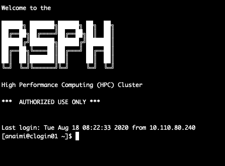
At this point, you will need to use some basic commands to interact with the Unix system. There are a lot of resources available on this topic. The best I’ve found (so far) is the free book by Sean Kross:
https://seankross.com/the-unix-workbench/
The more familiar you are with Unix commands, the easier time you will have using the cluster. Here, I’m going to show you some basic ways to interact with the cluster, and how to submit a job.
First we’ll get a sense of where we are on the cluster. If you use
the ls command, you will get a list of what’s in your
current directory:
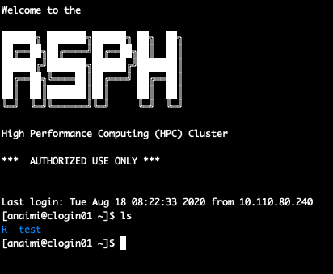
This tells me that I have two folders in my login (or home) directory R and test.
We can also use the pwd command to figure out where we
are in the tree structure of the cluster:
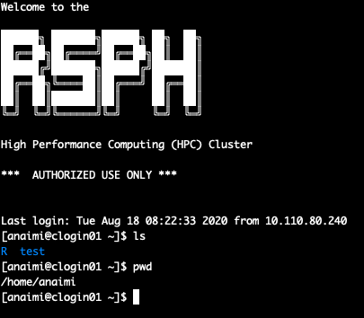
which tells us that my folder (anaimi) is located in a
home folder (home). We can move around from one directory
to another and explore using the cd command and then the
ls command. For example, to see what’s in the
test folder, I can use the cd command, which
stands for “change directory”:
cd testWhen we do this, and then ls the files in the directory
we moved to, we get this:
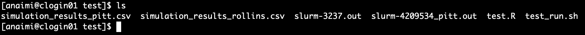
This tells us that in our test folder (~/anaimi/test),
there are six files. This folder contains the examples we will be using
to get you familiar with the cluster in this group. The files containing
“_pitt” in their name were similarly used for similar purposes when I
taught at the University of Pittsburgh.
Finally, for the sections that follow, it may be good to know that I typically open two command line interfaces: one that is working in the local directory that I have all of my relevant project files in, and the other that is working on the cluster. On my local computer, this is what my screen looks like:
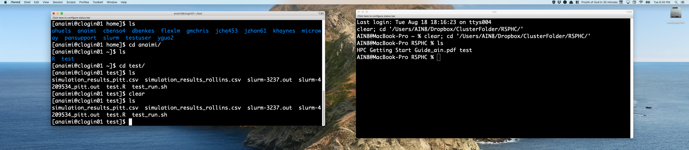
Running a job on the cluster can be broken down into four basic steps:
We will explore each of these steps using a very simple example.
First you need the files and programs that make up your job. To keep
things simple, suppose we were interested in generating a csv file with
10 columns and 500 rows, with all values drawn from a standard normal
distribution. We can do this easily with the MASS
package:
install.packages("MASS",repos='http://lib.stat.cmu.edu/R/CRAN')
library(MASS)
covariate_num <- 10
N <- 500
Sigma <- diag(1,covariate_num,covariate_num)
set.seed(123)
res <- mvrnorm(n = N, rep(0, covariate_num), Sigma)
write.csv(res,"./simulation_results.csv",row.names=F)You should copy and paste this code into an R script, and save it as
test.R. Make sure to test that it runs on your computer.
Once this program successfully returns what you need on your local
computer, the next step is to move it to the cluster.
There are a number of different ways one can move files and folders from a local computer to the cluster. If you are uncomfortable with the command line, you should look into the following file transfer protocol (FTP) applications. Two that I liked and used in the past include FileZilla:
https://sourceforge.net/projects/filezilla/
and transmit:
These applications allow you to easily drag-and-drop files from your
local computer to the cluster, but you must set them up appropriately.
Here, we will look at using secure copy, or scp. You will
first need to open up the command line with the directory pointing to
the location where your test.R program is. You can
cd directly into the folder with this program. On my
computer, this program is located in the
~/ClusterFolder/RSPHC/test/ folder. To cd into
this folder and copy the test.R file to the Rollins cluster, I can use
the following commands (note that you must still be logged on to the
VPN):
cd ~/ClusterFolder/RSPHC/test/
scp test.R anaimi@clogin01.sph.emory.edu:~/test/The above code says to secure copy the test.R file to
the test subfolder in the home directory
~/test of the anaimi@clogin01.sph.emory.edu
account. Once this code is run, you should be prompted to enter your
password. After you enter your password, you will receive confirmation
that the file was successfully copied:
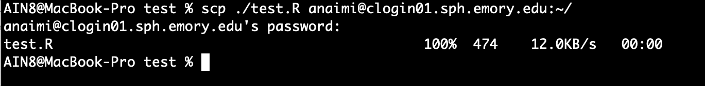
And we can now see this file on the command line as well:
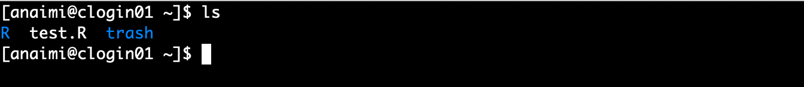
Now that the test.R file is on the cluster, we can begin
the process of testing and running it. There are many ways to test a
program on the cluster. Just keep in mind that when testing, you should
not use a program that will run for days, or use up all the computing
resources with heavy parallel runs. Instead, run only what you need to
confirm that you are getting the expected output, and nothing more.
First, to keep things organized, we’ll move our test.R
from the home folder to a sub-folder in home. To do this, enter the
following commands on the cluster’s command line:
mkdir test
mv test.R test
cd test
lsThe above code makes a folder (directory) called “test” (first line),
then moves the test.R file into the “test” folder (second
line), and then changes the CLI directory from “home” to “test” (third
line). The ls in the last line of the code above just
confirms that the test.R file is actually in the “test”
folder.
Next we can begin testing our program in the cluster environment. One
simple way to do this is to open R directly on the command line. To do
this, you need two simple steps. First, you have to ensure that R is
loaded in the cluster environment you are in. To do this, use the
module load command in the cluster’s command line:
module load RThen, all you need to do is type R and press “enter”.
This should lead to the following display:
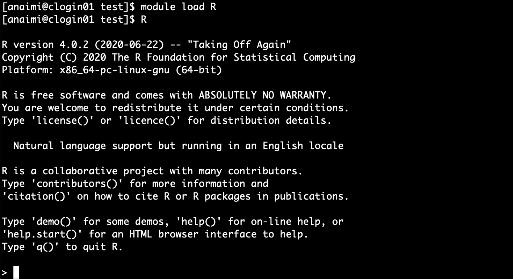
You can now copy and paste your code (from your local computer)
directly into the R console and run it as you would on your
local computer (note that to do this, you don’t actually need to scp the
file to the cluster, but it’s good to know how to use scp).
This is one way to evaluate whether any problems will occur when running
your job on the cluster.
Another way to test jobs is to actually run them through the batching system that all users are required to use when running jobs. The process occurs as follows:
sbatchNote there are many more details (plus some examples) on this how to
use sbatch (or more generally, SLURM commands, of which
sbatch is an example) available available in the User’s
Guide.
To run a job with the batching, we need to first write a shell script
with the arguments and options needed for our job. We can either write a
shell script locally (using, e.g., any text editor on your local
computer) and use scp to get it on the cluster.
Alternatively, you can open an editor directly on the cluster (e.g.,
vim) and write it there (click here, here, or here
for some tutorials on vim). For our test.R
job, here is an example shell script, which we’ll call
test_run.sh:
#!/usr/bin/env bash
#SBATCH --mail-type=ALL
#SBATCH --mail-user=ashley.naimi@emory.edu
#SBATCH --nodes=1
#SBATCH --ntasks-per-node=24
#SBATCH --time=00:10:00
#SBATCH --job-name=test_run
#SBATCH --mem=120g
#SBATCH --partition=short-cpu
module purge
module load R
Rscript test.RThis shell script consists of three components: SBATCH options, module loading, and script running.
The SBATCH options determine the characteristics of your job. In the above script, the first two arguments tell the cluster to send me an email with all information about my job (start, stop, error, cancel, etc). The nodes option sets the number of nodes you will be using on the cluster. Except in special circumstances, for the work done in our group this should almost always be one (even when parallel processing). The number of tasks per node option sets the number of cores that will be used on each node. Typically, you would set this to the maximum, which on the Rollins cluster will be 24 or 32.
The time argument is an important choice. Short time-jobs tend to get
bumped up in the queue (and thus there’s a shorter wait time for your
job to get started). However, too short, and your job won’t have time to
complete the job. This is typically one of the parameters I try to
estimate using trial runs, to project how long a full run will take. For
our test.R program, I selected 10 minutes because that is
plenty of time for this program to run to completion, and such a short
time wall will receive almost immediate priority.
Choosing the right memory threshold is also important. Too little, and your job will stop and return an error. But there is an upper limit to what the cluster can handle. Typically, however, I have found that the cluster memory options are more than available to handle my jobs. If your particular job is running into problems with memory, the Rollins cluster has large memory nodes with up to 1.5TB of RAM. For details on how to access these large memory nodes, please refer to the User’s Guide.
Finally, the partition option is important to select appropriately. There are five partitions on the Rollins cluster, each allocated to accommodate programs with a certain run time. Details are on page 6 of the User’s Guide.
The next section in the shell script tells the cluster which modules
you need to run your job. It’s important to start this section with
module purge, which clears up the environment, thus
avoiding potential conflict between modules.
Finally, you have to load R using module load r. Note
that we can also specify options here, which I sometimes do. To see
which modules are available to use, enter:
module availFinally, the command which runs the R program for our job is
Rscript test.R
To run the shell script shown above (named test_run.sh),
you need to use the sbatch command:
sbatch test_run.shAfter you run this command on the cluster, you should get a confirmation similar to the following:
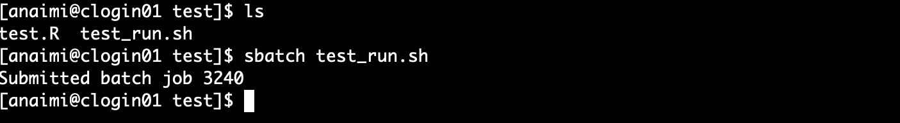
In this case, the job ID is 3240 You can check on the status of all
the jobs running on your account by typing:
squeue -u $(whoami), which should provide you information
on the status of job 3240 (note that you will likely not see anything,
because the job runs so fast!).
If you selected the mail-type=ALL option, you should
also receive an email confirming that the job started (this might not
occur immediately because of your place in the queue). Similarly, you
should receive an email when the job ends as well, which will include
information on whether or not it ended successfully (ExitCode=0), or
with an error (ExitCode=1, 2, or other number).
Once the job finishes, you should see the output from the
test.R file in the folder where the job was run:
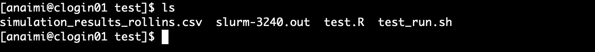
In the above figure, we see that we have the output from our
test.R file, (simulation_results_rollins.csv),
as well as a log file that capture any information relevant to our job.
We have now completed the task of running our job.
The last step is to move all the relevant files from the cluster back
to your local computer. Again, this can be done with any FTP
application, or the scp command. To do this using
scp, you must have your command line pointed to a folder on
your local computer. In my case, I want to move the files on the cluster
back to the folder on my laptop. From a directory on your local
computer, use the following on the command line to copy files and data
from the cluster to your local computer folder:
scp anaimi@clogin01.sph.emory.edu:~/test/simulation_results_rollins.csv .
scp anaimi@clogin01.sph.emory.edu:~/test/slurm-3240.out .Be sure to replace my user name with yours. Once you enter your password for both commands, you will receive notification of the status of the download:
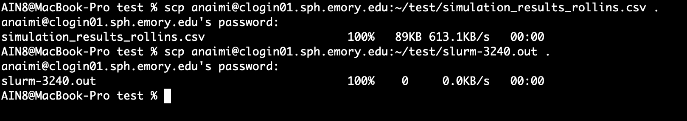
You should now have the simulation results on your local computer.
Finally, note that important files and sensitive information should not be stored on the cluster long term. Thus, be sure you have everything you need on your local computer, and clean up the folder space on the cluster.
To verify that you were able to successfully implement this exercise
on your own, run the test.R program on your computer and compare the
.csv file you obtain to the one you obtain from the run on
the cluster. Additionally, as long as you used the seed value of 123 on
your local and cluster runs, you can compare your output to the file
included here. The
three should be identical.